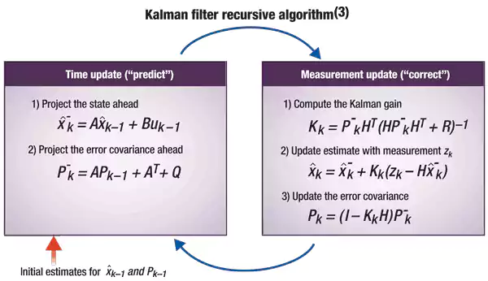

Kalman filter is a simple and fast algorithm which can be used to give an estimate of state based on erroneous sensor
measurements. In case of linear systems, the estimate comes out to be the best.
It can also predict states which cannot be directly obtained from sensor measurements.
Some applications are in robotics, trackpad and even in the Apollo Project.
The best thing about this filter is it’s simple mathematical structure which makes it feasible to be applied in real
time systems.
There are essentially 2 steps in a Kalman filter –
- Motion/Time Update step
- Measurement Update Step

Use of Kalman Filter in Commercial Detection:
We make use of a simple 1D Kalman filter which is equivalent to
Bayesian Filter.
Our state is a 1D variable X with associated uncertainly (variance) P. An audio file is read
in clips of 3 seconds and with every clip, the state is updated (through one motion update and
one measurement update). If the state comes as positive then the clip is considered as commercial
and if it comes as negative it is considered music.
In every clip:
- Features are extracted, and these features are used as used as sensor readings.
- Measurement Update: The sensor readings lead to a measurement in state. X and P
are updated.
- Motion Update: The state is moved closer to origin and the uncertainly (P) is increased.
Here is the justification for the approach:
- Since previous state has certain amount of say in the next state, the erroneous detection of commercials are
filtered. The Kalman Filter in some sense is preventing sudden changes in state. E.g. It is unlikely that
a single clip of 3 seconds is commercial while all the neighbouring clips to the left and right are music.
- If an advertisement is running for a long time than it is likely that it will end soon. Similar is the case with
music. The motion update step moves the state towards origin (i.e., commercial towards music and music towards
commercial).